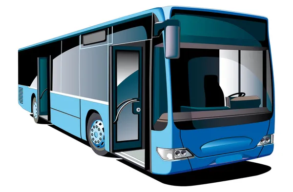

Facet i Lekarz
– Czemu wariat wyrzuca zegarek w czasie jazdy pociągiem?
– Żeby zobaczyć, jak czas leci.
- Kolor tekstu przez < font color="blue"> Tekst < /font >
- Rozmiar tekstu przez < font size="7> Teskt < /font >
- Wygląd tekstu przez < font face="Arial"> Tekst < /font >
- < H1 > Będzie największym nagłówkiem.
- < H2 > ... < H5> Będą coraz mniejsze.
- < H6 > Będzie najmniejszym nagłówkiem.
- < p align="center"> wycentruje tekst < /p >
- < p align="left"> zrobie tekst z lewej strony < /p >
- < p align="right"> zrobie tekst z prawej strony < /p >
- < b > tekst, który ma być wytłuszczony < /b >
- < i > tekst, który ma być kursywą < /i >
- < u > tekst, który ma być podkreślony < /u >
- < strike >
tekst, który ma być przekreślony < /strike >
- < sup > tekst, który ma być indeksem górnym < /sup >
- < sub > tekst, który ma być indeksem dolnym < /sub >
- Kabel USB C używany do ladowania i jako thundertbolt
- Kabel HDMI używany do laptopów i komputerów żeby obraz przesyłany na ekran
- Kabel Jack używany do słuchawek
kliknij aby skoczyć na środek tekstu
kliknij aby skoczyć na początek tekstu
Poczta
Plik
Tabela
Formularz